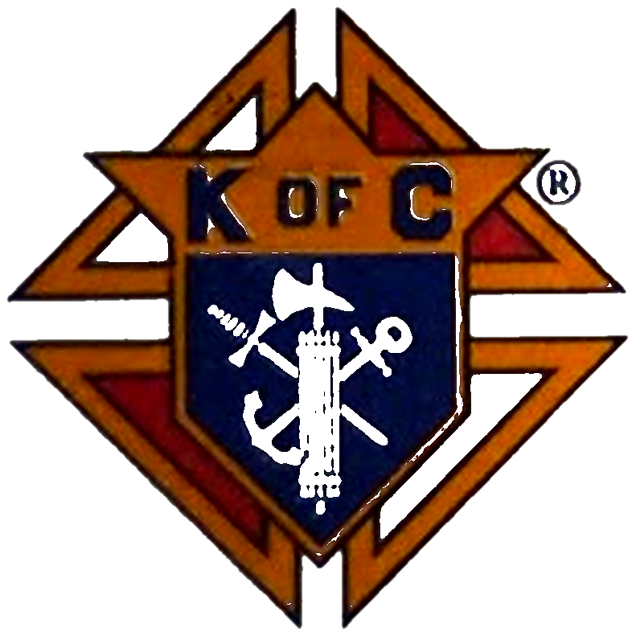

The Holy Rosary
A simple guide for prayer
How to pray the Rosary
Begin with the Sign of the Cross. Pray the opening prayers: the Apostles' Creed, one Our Father, three Hail Marys (for an increase in faith, hope, and charity), and one Glory Be. Announce the mystery for each decade, then pray one Our Father, ten Hail Marys, and one Glory Be. Continue through the five decades and conclude with the Hail, Holy Queen and the closing prayer.
Opening Prayers
In the name of the Father, and of the Son, and of the Holy Spirit. Amen.
I believe in God, the Father almighty, Creator of heaven and earth, and in Jesus Christ, his only Son, our Lord, who was conceived by the Holy Spirit, born of the Virgin Mary, suffered under Pontius Pilate, was crucified, died and was buried; he descended into hell; on the third day he rose again from the dead; he ascended into heaven, and is seated at the right hand of God the Father almighty; from there he will come to judge the living and the dead. I believe in the Holy Spirit, the holy catholic Church, the communion of saints, the forgiveness of sins, the resurrection of the body, and life everlasting. Amen.
Our Father, who art in heaven, hallowed be thy name; thy kingdom come, thy will be done on earth as it is in heaven. Give us this day our daily bread; and forgive us our trespasses, as we forgive those who trespass against us; and lead us not into temptation, but deliver us from evil. Amen.
Hail, Mary, full of grace, the Lord is with thee; blessed art thou among women, and blessed is the fruit of thy womb, Jesus. Holy Mary, Mother of God, pray for us sinners, now and at the hour of our death. Amen.
Glory be to the Father, and to the Son, and to the Holy Spirit; as it was in the beginning, is now, and ever shall be, world without end. Amen.
O my Jesus, forgive us our sins, save us from the fires of hell; lead all souls to heaven, especially those in most need of thy mercy.
The Mysteries of the Rosary
Tap a Scripture reference to read that passage in the USCCB Bible.
Joyful Mysteries
- The Annunciation
- The Visitation
- The Nativity
- The Presentation
- The Finding in the Temple
Prayed on Monday and Saturday.
Sorrowful Mysteries
- The Agony in the Garden
- The Scourging at the Pillar
- The Crowning with Thorns
- The Carrying of the Cross
- The Crucifixion
Prayed on Tuesday and Friday.
Glorious Mysteries
- The Resurrection
- The Ascension
- The Descent of the Holy Spirit
- The Assumption
- The Coronation of Mary
Prayed on Wednesday and Sunday.
Luminous Mysteries
- The Baptism of Jesus
- The Wedding at Cana
- The Proclamation of the Kingdom
- The Transfiguration
- The Institution of the Eucharist
Prayed on Thursday.
The Assumption and the Coronation come from Church tradition rather than a Gospel account; the readings shown are the customary passages for reflection.
By custom, the Joyful Mysteries are often prayed on Sundays of Advent and Christmas, and the Sorrowful Mysteries on Sundays of Lent.
Concluding Prayers
Hail, holy Queen, mother of mercy, our life, our sweetness, and our hope. To thee do we cry, poor banished children of Eve; to thee do we send up our sighs, mourning and weeping in this valley of tears. Turn then, most gracious advocate, thine eyes of mercy toward us; and after this our exile show unto us the blessed fruit of thy womb, Jesus. O clement, O loving, O sweet Virgin Mary. Pray for us, O holy Mother of God, that we may be made worthy of the promises of Christ. Amen.
O God, whose Only Begotten Son, by his life, Death and Resurrection, has purchased for us the rewards of eternal life, grant, we beseech thee, that meditating upon these mysteries of the most holy Rosary of the Blessed Virgin Mary, we may imitate what they contain and obtain what they promise, through the same Christ our Lord. Amen.
In the name of the Father, and of the Son, and of the Holy Spirit. Amen.